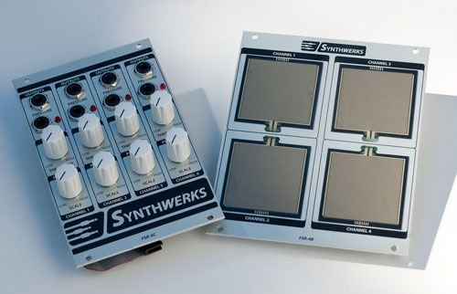

This launched today on kickstarter... might make sense for a couple of reasons.
SMASHmouse Universal pedal for... Axoloti?
Gavin
#2
Seams pretty cool idea, but I think you would want something a little more extensive if you were wanting something for flexible and capable.
Like maybe 4 of these and at least 10 extra switches as well.
servandisco
#3
I just bought yesterday three analog joysticks.. maybe a bit small on itself to be used with the feet but could be a foundation to do something like that or even more complex..
Ersatzplanet
#4
I knew a guitarist "back in the day" that had this dual filter box called a Pluto Pedal that had a X-Y foot pedal attached to it. The pedal worked differently in that it did the typical up/down but for the Y axis was rotation instead of the leaning action this Kickstarter does.
I thought of making a X/Y foot controller using four FSR sensors. A metal plate with four rubber feet on the axis that would press against the FSRs to give you the four outs. I was going to mod one of our Eurorack modules to do it. The FSRs are pretty sensitive so some adjustments would have to be made.
